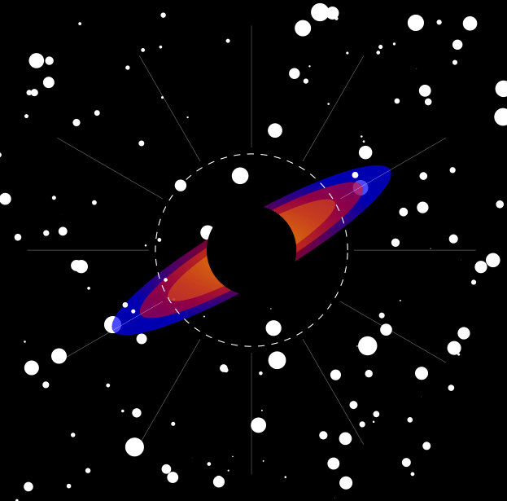

Physicist

I earned my BS in Physics at Escuela Superior Politécnica de Chimborazo and soon, I will be pursuing my MS degree of Applied Mathematical Sciences in Mathematical Physics within the Center for Relativity and Cosmology at Troy University. I have a strong interest in Relativity and Cosmology. I culminated my bachelor's degree with my thesis research on gravastars - an alternative theory with the aim of solving the problems of classical black holes (you can read more about this here). - I also like to connect the theoretical elegance of nature phenomena with cutting-edge computational frameworks. You can feel free to explore and learn what I do and I'm interested in.
The goal of this research was to develop a new gravastar model with vanishing complexity, a condition useful for the study of complex stellar objects. To achieve this, the methodology employed consisted of using extended minimal geometric deformation approach under the gravitational decoupling framework. Through this methodology, a new gravastar solution was obtained and it was demonstrated that this new solution satisfies the necessary conditions to be considered a physically acceptable solution.
My activities carried out at the GEAA - ESPOCH as research assistant, focusing on implementing a dynamic clustering algorithm in Python using K-Means algorithm. Dynamic clustering offers advantages over traditional methods in identifying climate patterns. The work included literature review on climate models, clustering algorithms and dimensionality reduction techniques (PCA/EOF) using data from the CNRM and CMIP6 models.
You can email me either at alexandersarango[at]gmail.com or asarangotorres[at]troy.edu.